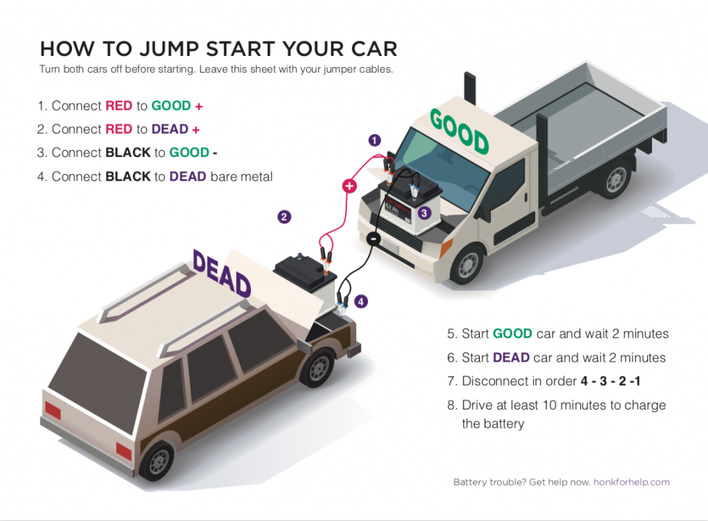

Replacing a flat tyre
If you do have a flat, you can safely change it yourself if you know how to use the jack, and are able to lift and position the spare tyre comfortably. Read our step-by-step guide on how to change a flat tyre.
Changing a flat tyre involves several steps. Here’s a simplified guide:
- Apply the the parking brake: This ensures the vehicle doesn’t move
- Remove your spare tyre and the jack: These are usually located in the trunk of your car
- Loosen the lug nuts: Use the tyre iron from your trunk to do this
- Raise the vehicle with the jack: Once the vehicle is in the air, remove the nuts entirely
- Put the spare on: Make sure it’s fitted correctly
- Tighten the nuts by hand before lowering the vehicle: Once the vehicle is lowered, tighten the nuts fully
Jump start your car
However, if your battery has totally run out, it's likely that simply charging it won't work. Your next option is to try a jump start. You'll need a jump starter pack or a set of jump leads and a 'donor' car to do this.
Get a second opinion
If jump starting or recharging doesn't get your car going, you may have a more serious problem. If you can get your car to the nearest Halfords, our in-store staff can check your battery for free and determine whether the issue is simply a flat car battery, or whether it could be something else, such as a fault with the alternator.
Replace your battery
The other option is a mobile car battery replacement courtesy of our Halfords Mobile Expert service. This service brings
a technician straight to your door and fittings can be booked directly on the website, with next-day fittings also
available.
Bear in mind that even if you manage to recharge or jump start your battery, its life may have been significantly shortened after a discharge - you may want to replace it at some point for a new one.
How to check your oil level
First, pull the dipstick out carefully and wipe any oil off it – this is so you can get an accurate reading. Then, replace it until you hear a click, and remove it again. You should now have a fresh level of oil to measure.
Look at how far up the dipstick the oil reaches. The stick will feature two lines or dots a set distance which indicates the idea amount of oil – you want your oil level to sit somewhere within this gap. If the oil level sits below the lowest line, then you’ll need to top up straight away.